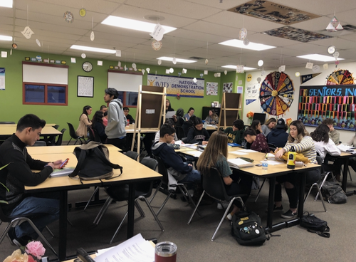
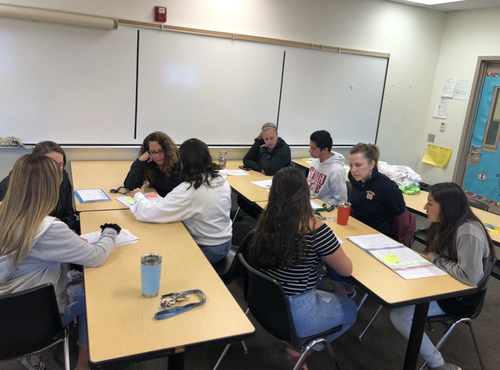
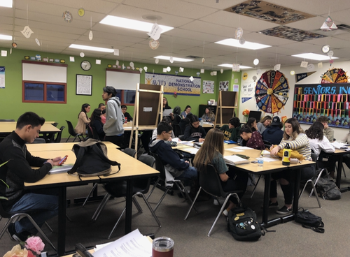
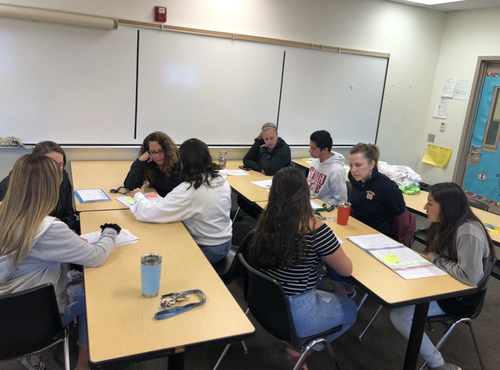
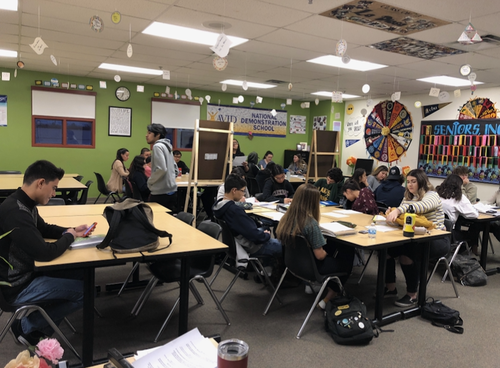
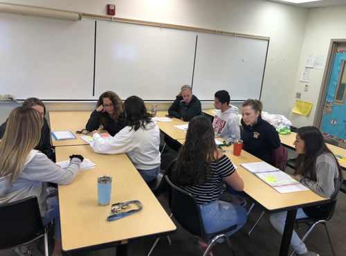

Montserrat Gonzalez
"Your limitation is only your imagination" I like to take this quote and think that if you dont believe you'll never achieve.This is how I approach any barrier, if I believe I can accomplish anything then the biggest obstacle has been overcome.
The experience I have aquired from my work these past few years has allowed me to grow as an individual but most importantly as an intellectual. Working simultaneously as an educator and student has taught me the importance of respect, compassion, and validating the work I do. These qualities became the foundation for the start of my professional career.
Before finishing high school I landed a job as a hostess in a restaurant, fearful of the horror stories people talk about I started with a careful eye and a silent mouth. With time I learned that all those horror stories were not the rule but the exception. Many people are inclined to talk about their bad experiences rather than their good ones. I had a wonderful manager that was fair as long as his workers followed the rules and were responsible. After high school my high school teacher offered me a job as a tutor because of my positive attitude and work ethic and I was forever grateful for the wonderful opportunity at a time where jobs were hard to land with so many other fresh off of high school kids. Being a tutor taught me to be patient and behave as a professional under any circumstance. It allowed me to prove that I was mature enough despite the small age gap between the students and I.
The one thing I wish from this point forward is to never stop pursuing my dreams no matter how many doors close or how many people turn away there will always be another door left unlocked and a person that I can change their mind. The current dream, which is also my long term dream, that I am currently trying to pursue is becoming a Physician Assistant. All it took was a “Gifted Hands” book and the fervent voice of my fifth grade teacher to introduce me to the beautiful world of medicine. From that point on being in the medical field was all I ever wanted and thought that being a doctor was the way to go. However, as I grew older I became fascinated with how the brain works, what makes people behave the way they do. Psychology although it has been deemed as a useless degree has, in my eyes, more potential in it than any other ‘useful’ degree. There are so many unknowns about the brain and I truly believe that medicine and psychology go hand in hand. Physician Assistant is a career that will allow me to obtain my life long dream of being in the medical field but also give me the flexibility to pursue different interests in medicine.
Experience
High School Tutor/Substitute
• Educated and guided students on different class subjects
• Prepared lectures and oversaw discussions
• Skills in editing
Proctor
• Deligated students to proper protocol for testing
• Organized large numbers of students
Hostess
• Learned how to improvise in difficult situations
• Developed verbal skills
• Acquired organization skills
Education
UC Riverside
Portfolio

.png) 



.jpg)

